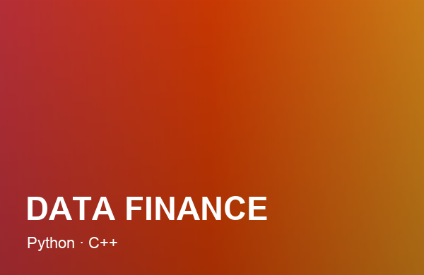

Analyse de Données Financières
Un projet personnel mené en autonomie : un outil en Python et C++ pour suivre et analyser des données financières. Au-delà de l'analyse, ce projet a été l'occasion d'apprendre le C++ par moi-même, en vue d'applications robotiques futures.

Suivre et comprendre des données financières demande des outils adaptés. Plutôt que d'utiliser une solution toute faite, j'ai choisi de construire la mienne — un excellent terrain pour progresser en programmation.
Un noyau de traitement et d'analyse des données, avec Python pour le prototypage rapide et la manipulation des données, et C++ pour les parties qui demandent davantage de performance.
L'objectif sous-jacent : maîtriser le C++ en autonomie. Un langage incontournable pour la robotique et les systèmes embarqués, que je construis brique par brique à travers ce projet concret.
Le projet continue d'évoluer : nouvelles analyses, meilleure visualisation des données et réutilisation des briques C++ pour de futurs projets robotiques.